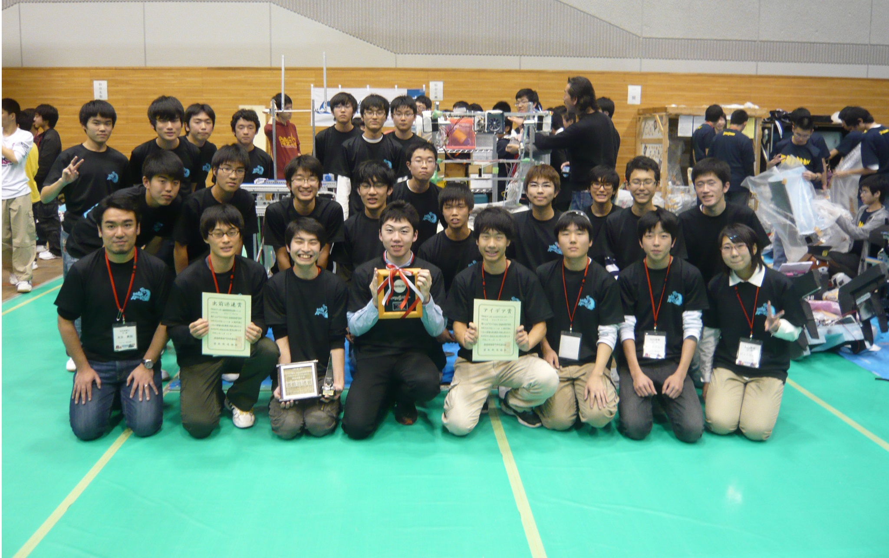

SCIENCE CLUB
わたしたちについて

私たちは国立仙台高等専門学校広瀬キャンパスの科学部です。
私たちは、毎年NHKが主催する「アイデア対決・全国高等専門学校ロボットコンテスト」(以下ロボコン)に参加することを主な
活動とし、それに繋がる研究や実験なども行っています。
科学部の活動の大まかな例を挙げると
春季…ロボコンのルールに合わせてアイデア出し、試作
夏季…ロボット完成、練習
秋季…高専祭での展示、ロボコン
冬季…他高専との交流、個々人の技術向上
となっています。
科学部で使用している様々な材料、機材はほとんど後援会費やメカトロニクス教育推進室というところから支援されています。
特にメカトロニクス推進室は、予算だけでなく技術面でも支援をしてくださいます。
活動場所は創造教育棟1階の創造教育工房(以下工房)という場所や、7号棟の実験実習試作室(以下工作室)です。
工房は自由に使うことができる広い活動場所のため、実験等にいちいち場所を借りることがなく
より効率よく活動することができます。
工作室は、日常生活では見ることもないような機械があります。
機械は使い方、安全管理を理解すれば誰でも使用することができます。フライス盤や溶接機も使用できますよ。
CONTACT
ご意見などがございましたら”sncthc.scienceclub@gmail.com”までメールをお願いします。